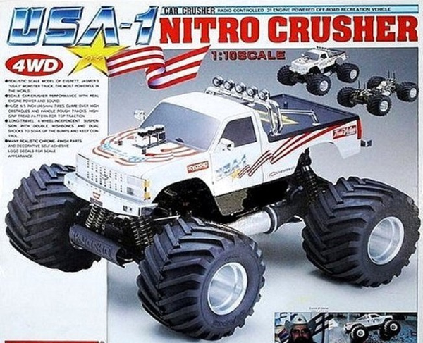

京商 USA-1 ニトロクラッシャー

引用元画像：京商カタログ
🏁 初代 USA-1 ニトロクラッシャー（1990年発売）
📋 基本情報
| メーカー | 京商（Kyosho） |
|---|---|
| 機種名 | USA-1 ニトロクラッシャー（USA-1 Nitro Crusher） |
| シャーシ略称 | USA-1ニトロクラッシャー |
| 型番 | 3241 |
| 発売時期 | 1990年 |
| 価格 | 詳細不明 |
| 生産状況 | 生産終了 |
| カテゴリー | ラジコンカー（1/8スケール エンジンRCカー） |
| サブカテゴリー | 21エンジンモンスタートラック（4WD） |
| シリーズ | Burnsシャーシベース |
📏 シャーシスペック
| スケール | 1/8スケール |
|---|---|
| 全長 | 詳細不明 |
| 全幅 | 詳細不明 |
| 全高 | 詳細不明（ビッグタイヤ装着） |
| ホイールベース | 詳細不明 |
| トレッド | 詳細不明 |
| タイヤ幅/径 | 6.5×4.13×3-0-KC シェブロンパターンタイヤ（アルミフィニッシュ2.8ナイロンホイール） |
| フレーム | アルミプレートシャーシ（Burnsベース） |
| 全備重量 | 詳細不明 |
⚙️ 駆動系
| 駆動方式 | シャフトドライブ4WD |
|---|---|
| デフギヤ | 3×ギヤデフ（ベベルギア式） |
| ギヤ比 | 詳細不明 |
| ギヤピッチ | 詳細不明 |
| トランスミッション | センチュリーガルクラッチ式ピニオン＆スパー（Burnsベース） |
| ドライブシャフト | フロント:ユニバーサルジョイント / リア:メタルドッグボーン |
| エンジン | .21サイズエンジン（ミッドシップ配置） |
| ブレーキ | ディスクブレーキシステム |
🔧 サスペンション
| 形式 | 4輪ダブルウィッシュボーン独立懸架（キャンバー調整可能） |
|---|---|
| サスアーム | ナイロン製Aアーム |
| ダンパー | 8本×Kelronボディ付きオイル封入コイルオーバーショックアブソーバー（ダブルショック/コーナー） |
| ショックタワー | アルミプレート製ショックタワー（前後、高さ増し設計） |
| ステアリング | ツインベルクランクステアリング（スプリング式サーボセーバー、調整式タイロッド） |
💡 初代の特徴
1/8バギーシャーシをベースにしたモンスタートラック
- 1990年、USA-1 4x4 Inc.のライセンスにより、京商が1/8スケール4WDニトロパワーバージョンを製造
- 同時期に発売された1/10電動USA-1ではなく、1/8 Burns 4WDオフロードバギーをベースに採用
- 1987年Big Bruteにルーツを持つ1/10電動USA-1とは異なるアプローチ
Burnsシャーシベースの高性能
- アルミプレートシャーシとナイロン製4輪独立ダブルAアームサスペンション
- ツインベルクランクステアリング、スプリング式サーボセーバー、調整式タイロッド
- アルミ製ジョイントプレートによるシャーシ補強
- .21サイズエンジンをミッドシップ配置
ビッグタイヤによる破壊的な走行性能
- 1/8バギー用シャーシをベースに、強大なグリップとトラクション負荷、強烈なショックに耐える強度を実現
- Burnsから機械的・視覚的に大きく変化
- 高さを増したアルミプレート製ショックタワー（前後）
- 各コーナーにダブルショック配置（合計8本のKelronボディ付きオイルダンパー）
高度にディテールアップされたボディ
- 1990年シボレー・シルバラード クリアレキサンボディ
- クロームバンパー、グリル、ツインチューブロールバー、オフロードライト、ミラー
- トリプルプレデタースタイルキャブレター（エアクリーナー、トップカバー付き）
- 実車USA-1のリバリーを再現する完全なデカールセット
充実した標準装備
- ディスクブレーキシステム
- ミニフロントバンパー
- 燃料タンク、マフラー
- ベアリングとメタルブッシングの組み合わせ
🔧 修理難易度（初代）
★★★★★（非常に困難）
パーツがほぼ見当たらず、レストアとしても難しい状態です。情報も公式と有志の方が少し載せているのみでほぼないのが現状です。
🚀 復刻版 USA-1（2024年7月発売 - 現行販売中）
📋 基本情報（復刻版）
| 型番（エンジン版） | 33155D（25エンジンモンスタートラック） |
|---|---|
| 型番（電動版） | 34257D（ブラシレスモーターパワード4WDモンスタートラック） |
| 発売時期 | 2024年7月 |
| 価格 | エンジン版：¥99,000（税込）/ 電動版：¥101,200（税込） |
| 生産状況 | 現行販売中 ✅ |
| カテゴリー | ラジコンカー（1/8スケール モンスタートラック） |
| シリーズ | Mad Crusher 2.0 & FO-XXベース |
📏 シャーシスペック（復刻版）
| 全長 | 570mm |
|---|---|
| 全幅 | 450mm |
| 全高 | 281mm |
| ホイールベース | エンジン版:360mm / 電動版:355mm |
| トレッド | F:339mm / R:343mm |
| タイヤ | φ164×104mm（F/R共通） |
| 全備重量 | エンジン版:4,990g / 電動版:5,040g |
⚙️ 駆動系（復刻版）
| 駆動方式 | シャフトドライブ4WD + 5リンクサスペンション（Mad Crusher 2.0 & FO-XXベース） |
|---|---|
| ギヤレシオ（エンジン版） | 25.7/19.8/15.6:1 |
| ギヤレシオ（電動版） | 8.68:1 |
| エンジン（エンジン版） | リコイルスターター付KE25SP2 |
| モーター（電動版） | KSH TORX 8+ kv2300（ブラシレスモーター） |
💡 復刻版の特徴
30年ぶりの復活と現代技術の融合
- 1990年のオリジナルから30年を経て、初代を圧倒的に上回る性能で復活
- 現代のシャーシ・ドライブトレイン技術を採用
- USA-1専用のアップグレードを随所に装備
- ディスプレイモデル級に仕上げられた「ULTRA SCALE BODY」
アイコニックなデザインの再現
- ボディに配されたアメリカ国旗グラフィックは初代の誇りを継承
- 1980～90年代のアメリカントラッキングパワーを体現した伝説の1/8スケールUSA-1
- 1990年代に京商が正式ライセンスで製造したR/Cモデルの力強さと栄光を再現
Mad Crusher 2.0 & FO-XXベースの高性能シャーシ
- シャフトドライブ4WD + 5リンクサスペンションを採用
- Mad Crusherよりもさらに厚く強化されたアクスルとサスペンションリンク
- ソリッドアクスル採用で、実車USA-1に匹敵する本格的なドライビング体験
ウィリーバーの標準装備
- エンジン版・電動版ともに強力なパワーに対応するウィリーバーを標準装備
- ディスプレイ用ではなく、実用性を重視した設計
2つのパワーオプション
エンジン版（33155D）：
- リコイルスターター付KE25SP2エンジン
- 3段階のギヤレシオ調整（25.7/19.8/15.6:1）
- ¥99,000（税込）
電動版（34257D）：
- KSH TORX 8+ kv2300 ブラシレスモーター
- 7.2V Ni-MHまたは7.4V LiPoバッテリー×2本対応（Superプラグ）
- ¥101,200（税込）
レディセット仕様
- プロポリンケージ完了工場完成シャーシ
- 塗装＆デカール貼り済みボディ
- 2.4GHzシンクロKT-231P+送信機付属
- 走行に必要な工具類も付属
🔧 修理難易度（復刻版）
★★☆☆☆（比較的簡単）
復刻版はパーツも出ており、比較的直しやすい部類です。特にエンジンカーは、ぽすとそに工房でも所有しており、何かと機転が利くと思います。
🔧 ぽすとそに工房での修理実績
よくある故障・注意点
初代（1990年）：
- パーツ入手が極めて困難（絶版品）
- Kelronボディのダンパーの劣化・オイル漏れ
- ギヤデフの摩耗・グリス不足
- .21エンジンのメンテナンス不足による不調
- ビッグタイヤ・ホイールの劣化・ひび割れ
- アルミパーツの腐食や変形
- ドライブシャフトの摩耗
復刻版（2024年）：
- エンジン版：リコイルスターターの使用方法に慣れが必要
- エンジン版：定期的なエンジンメンテナンス（グロープラグ交換、キャブレター調整）
- 電動版：LiPoバッテリーの取り扱い注意（過充電・過放電防止）
- ソリッドアクスル式のため、ジャンプ着地時の衝撃管理が重要
- 5リンクサスペンションの調整・メンテナンス
修理のポイント
初代（1990年）：
- Burnsシリーズとの互換パーツを探す
- ダンパーは現代の1/8バギー用に交換を検討
- エンジンは定期的なオーバーホール必須
- 3Dプリンターで破損パーツの自作も視野に
- レストアの際はオリジナルパーツの保存を最優先
復刻版（2024年）：
- パーツは京商から入手可能
- エンジンメンテナンスは定期的に実施（燃料フィルター清掃、キャブレター調整など）
- 電動版はバッテリー管理が重要（適切な充電・保管）
- ソリッドアクスル式のため、ダンパーオイルの粘度調整が走行フィールに大きく影響
- ウィリーバーの調整で走行特性をカスタマイズ可能
その他の特徴
- 初代（1990年）は1/8バギーシャーシをモンスタートラックに転用した歴史的価値の高いモデル
- 復刻版（2024年）は初代から30年を経て、あらゆる面で性能向上を実現
- エンジン版・電動版の2つのパワーオプションで、好みに応じた選択が可能
- 復刻版はMad Crusher 2.0 & FO-XXベースのため、関連パーツが豊富
- USA-1 4x4 Inc.の正式ライセンス品として、本格的なディテールを再現
- ぽすとそに工房でもエンジン版を所有しており、実践的な修理・メンテナンスサポートが可能